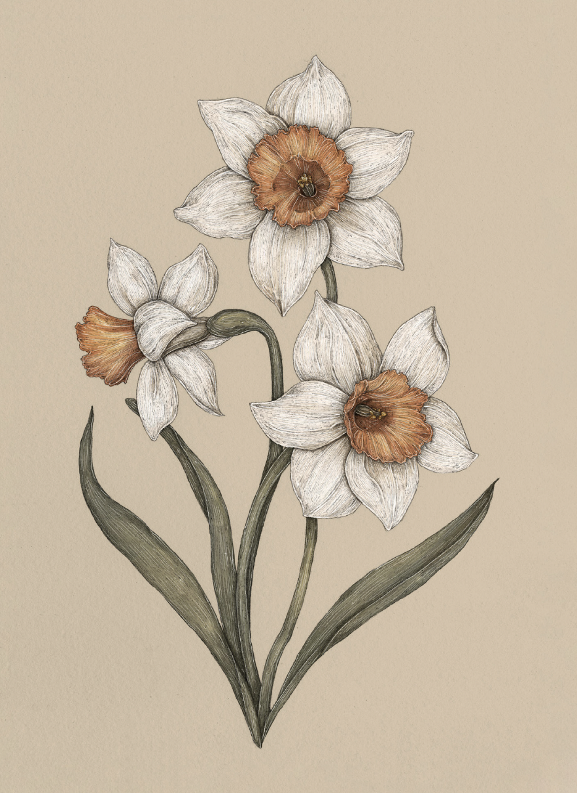

Plate DAFFODIL
The Language of Flowers
Daffodil Study

Daffodil
Narcissus
Definition: A flower associated in floriography with unrequited love and longing that is not returned.
Meaning
Unrequited love
Origin
The Greek legend of Narcissus, from which the scientific name of this plant derives, tells of a
handsome and proud hunter who, upon seeing his reflection in the waters of a spring, falls in love
with himself. Unable to part from his own image, he eventually perishes. A daffodil then blooms to
mark his grave.
Pair With
- Clover for hope for change
- Sweet Pea to indicate giving up on an ill-suited romance